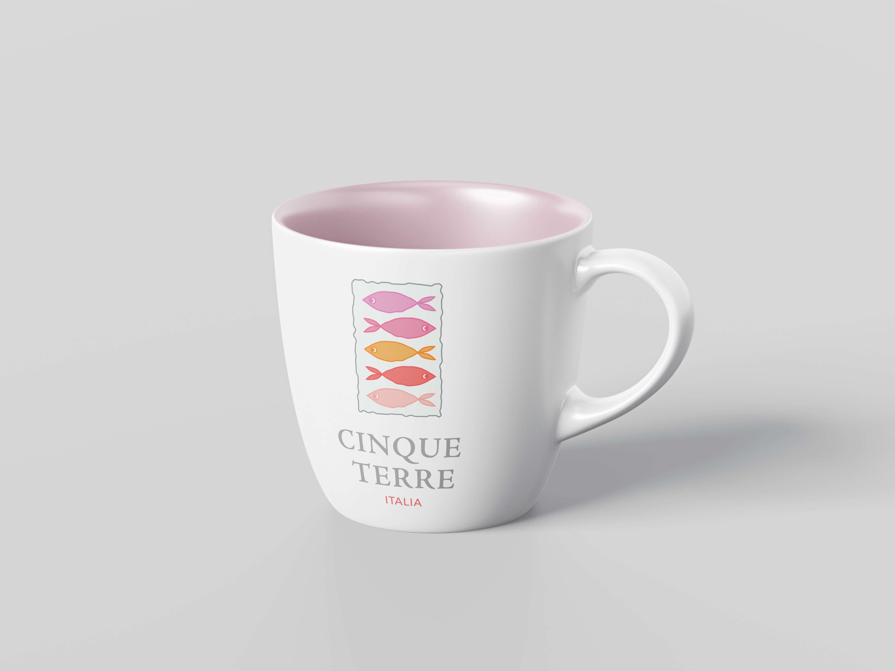

Cinque Terre
A Destination Emblem
Uncover the charm of Cinque Terre, where vibrant villages meet breathtaking cliffs and the Ligurian Sea, creating an unforgettable Italian escape.
THE CHALLENGE
How can you channel the beauty of Cinque Terre in every brand element?
To capture the essence of Cinque Terre, I conducted extensive research to gain a deeper understanding of its spirit, arts, culture, history, and present-day identity. Next, I sketched several ideas, narrowing them down to three key concepts, which I then digitized. For the final logo, I incorporated vibrant colors inspired by the villages and textures that evoke the rugged cliffs and coastal landscapes. The logo creates a cohesive and authentic representation of Cinque Terre’s charm.
